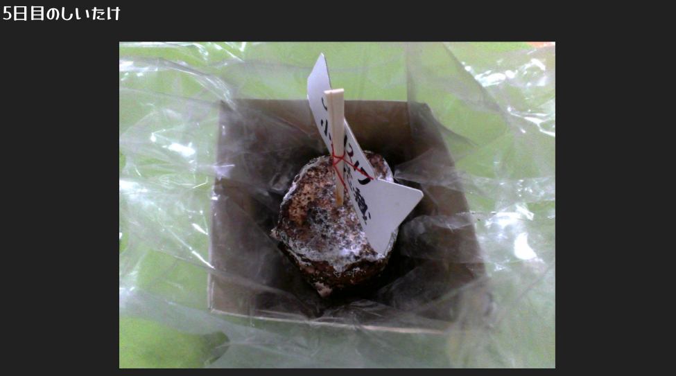
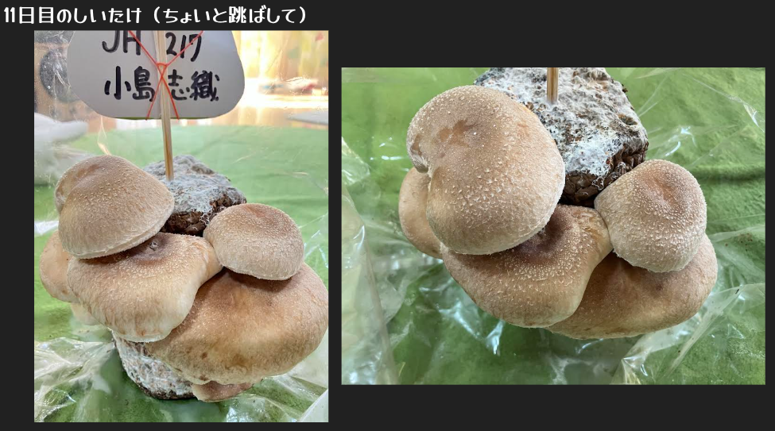
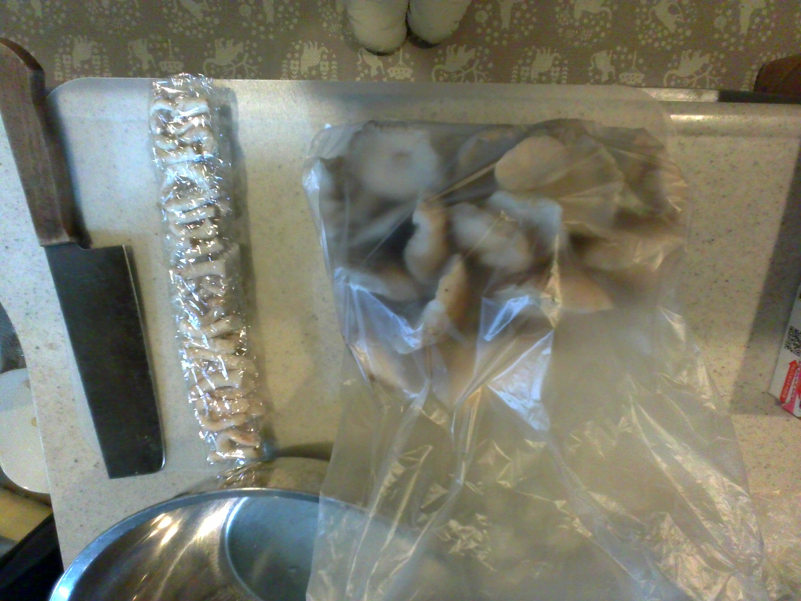

しいたけの一生
《育てる》 ―― 《収穫する》 ―― 《食べる》
ここでは、そんなしいたけの一生を追っていく！
目次
①１回目の栽培
②１回目の収穫
③２回目の栽培
④２回目の収穫
⑤調理
⑥完成！！ ― いただきます。
⑦味の感想 ― ごちそうさまでした。
⑧まとめ
①１回目の栽培
栽培初日！
まずは水で菌床（土台）を水で濡らす。
こうすることでしいたけの赤ちゃんが目覚める＿らしい。
できたら箱にセットする。これが結構大変。なんか変な金色の液体が出てきた．．．
最後に霧吹きで水（肥料入り）を与えて放置！
今のところ生えてくる気がしない。
３日程経過！
【結果】ちゃんと生えてた。
若干しいたけが右側に生えてきた。たまごボーロにしか見えない。
思ったよりも成長が速い。今回も同じように霧吹きで水を与える。
さらに３日程経過！
前回生えてきたたまごボーロが進化した。しかも増えている！
左側にもしいたけが生えてきた！いつも通り水を与えてまた放置。
――ゑ！？――
衝撃の10日目。（おそらく）
この間に何があったのか不安になるレベル。
めちゃめちゃ成長してた。360°からしいたけが生えていた。
※２カメ→
※３カメ→
②１回目の収穫
いよいよお待ちかねの収穫！ハサミを使って一個一個根本（石づきという）から切っていく。
根本から切り落とすことで、２度目の栽培がしやすくなるとのこと。
全部切り落とした。さっきあんなに根本から根本から
って言ってたのに実際やったらしいたけの密度が高すぎてハサミの刃が根本まで届かなかった！結局素手で抜いた。
後から写真見て気付いたこと
結構この時点で白いカビが菌床のてっぺんに生えてる。
最初の写真と見比べたら分かりやすい。（こっからどんどんカビが
暴走していく．．．）
収穫したしいたけ達は保存袋にいれて冷凍庫内で保存する。
人生初の栽培 ＆ 収穫 ―完―
③２回目の栽培
もう一度しいたけを育てよう！
まずは準備から。２回目は菌床をしっかり水につけて、しいたけの赤ちゃんを目覚めさせていく！
菌床は水につけても浮いてきちゃうから、重しを上から乗せる必要がある。
重しの例：水の入ったペットボトル
水をためたボウル
半日水につけたら、取り出してもとの袋に入れて、箱にセットする。
水が変色してた．．．確か１回目の栽培の時も、箱にセットするときに
変な金色の液体が出ていたから、それと同じ液体なのかも知れない。
もうすでにしいたけが生えてる、凄い生命力！
２日目！
しいたけ：０
まあ、２日じゃまだ生えてこないよね〜。
肥料は持っていないので、霧吹きで水を与えた。
３日目！
しいたけ：０
まあまあ、まだ生えてこないよね〜！
（あれ、でも１回目の栽培の時たまごボーロ結構生えてたよな、？）
まあ、２回目だからちょっと時間かかるのかも！
４日目。
しいたけ：０
ちょっと心配になってきたぞ？
霧吹きで保険をかける。

奇跡の５日目―
しいたけ：．．．．．．．．．．．．２!!!!
すっごく小さいけど、手前側にたまごボーロが！
よかったー。
６日目！
昨日はたまごボーロだったのがしいたけらしくなってきた。
霧吹きで水を与えた。
７日目〜！
凄い成長速度だ！一気にしいたけが生えてきた！
さすがにここまで来ると菌床のてっぺんのカビも凄いな．．．
よく見たら側面にもカビある！！

訳あっていきなり11日目！
いや、凄い量だな。１回目より本数は少ないけど
一本あたりの傘がデカすぎる！
④2回目の収穫
今回は１回目の収穫で学んだことを活かして、全部素手で抜いた。
1回目と同様、冷凍庫に入れて保存する。
⑤調理
いよいよ自分で栽培 ＆ 収穫したしいたけをおいしく調理していく！
《材料》
・しいたけの傘 ⋯⋯８個
・バター ⋯⋯⋯⋯⋯24ｇ（個包装１ブロックあたり８ｇ×３）
・水 ⋯⋯⋯⋯⋯⋯⋯大さじ２
・しょうゆ ⋯⋯⋯⋯少々（好み）
これらを使って『簡単焼くだけ♡激ウマ！椎茸バター醤油焼き』
を作っていく！
《準備》
まずはしいたけを「傘」、「軸」、「石づき」に切り分ける。

石づきは捨てる。今回は傘８個だけを使うから、
残った傘と軸は冷凍庫に入れる。
（軸は整列させてラップに包んでから冷凍庫！）
《調理》
１．しいたけの傘を裏返してフライパンに並べる。
２．それぞれ大体３ｇずつになるようにバターを乗せる。
３．水を入れて、アルミホイルで蓋をしたら中火にかける。
４．バターが溶けて、しいたけがシナシナになったら
アルミホイルを外してちょっと混ぜる。
◎実際の調理の様子▶動画
⑥完成！！ ―いただきます。
『簡単焼くだけ♡激ウマ！椎茸バター醤油焼き』の完成〜〜〜！！